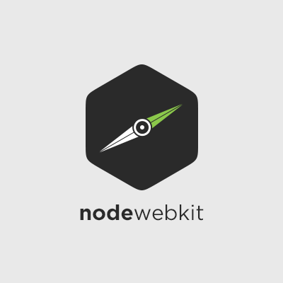
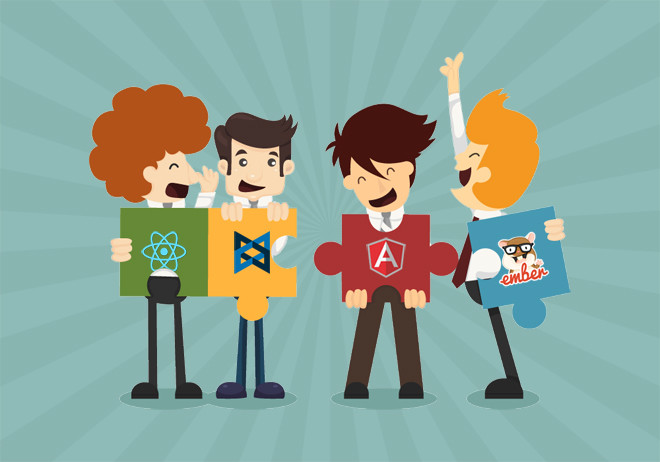

JS
También en el escritorio
Y que hay de nuevo?


Primeros Pasos
Instala Electron
npm -g i electron-prebuiltCorre tu aplicación
electron [directorio-app]Estructura de una aplicación y la principal diferencia con Nw.js
Ver directorio hworld y hworld-nwjsComponentes Nativos
Ver directorio electroncomponents
Comunicando Main y Renderer
Ver directorio videostreamingDistribuye
- Copia tu aplicación dentro del directorio resources de Electron.
- Renombra la carpeta de tu aplicación por 'app'
- Ejecuta Electron
..y empaqueta
npm -g i asarasar pack [directory] app.asarAhora solo resta incluir tu archivo app.asar en la carpeta resources de electron ;)
Ocupalo como tu quieras
FIN
Encuentra las diapositivas en Github!github.com/DannielWhatever/js-en-el-escritorio